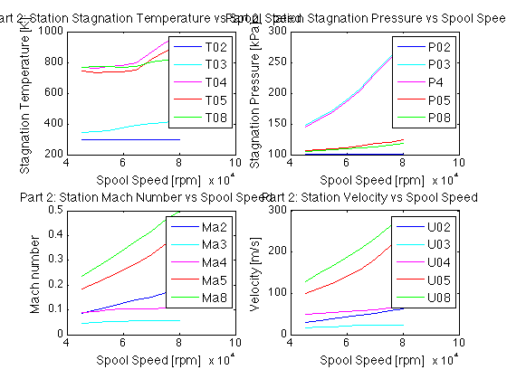
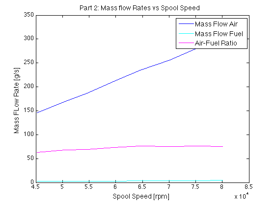
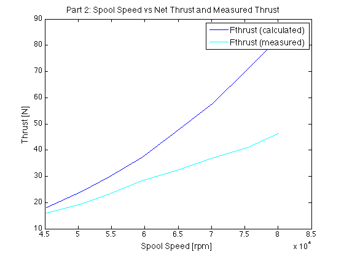
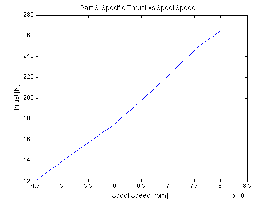
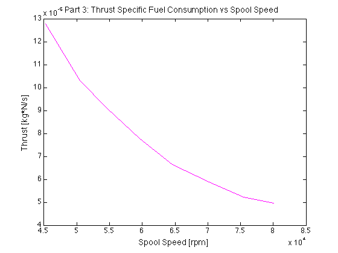
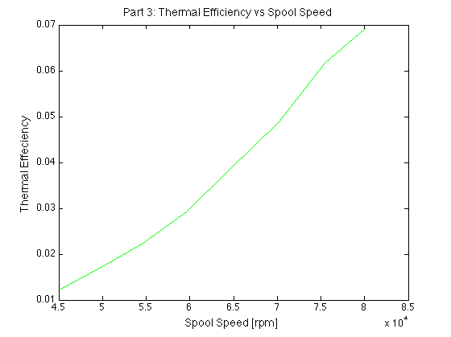
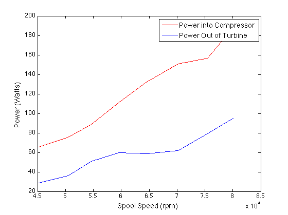

clc;
clear all;
close all;
C_TO_K = 273.15;
LBF_TO_N = 4.44822;
IN2_TO_M2 = 6.4516*10^-4;
KPA_TO_PA = 10^3;
KG_TO_G = 10^3;
KJ_TO_J = 10^3;
R = 287.058;
rpm = me140_project2_data(1)';
mdot_fuel = me140_project2_data(13)';
Fthrust_meas = me140_project2_data(14)' .* LBF_TO_N;
Toil = me140_project2_data(7)' + C_TO_K;
T2m = me140_project2_data(2)' + C_TO_K;
T3m = me140_project2_data(3)' + C_TO_K;
T4m = me140_project2_data(4)' + C_TO_K;
T5m = me140_project2_data(5)' + C_TO_K;
T8m = me140_project2_data(6)' + C_TO_K;
Patm = 101300;
dP2 = me140_project2_data(8)' .* KPA_TO_PA;
P03 = me140_project2_data(9)' .* KPA_TO_PA + Patm ;
P4 = me140_project2_data(10)' .* KPA_TO_PA + Patm;
P05 = me140_project2_data(11)' .* KPA_TO_PA + Patm;
P08 = me140_project2_data(12)' .* KPA_TO_PA + Patm;
RFcross = linspace(.68, .68, length(rpm))';
RFaxial = linspace(.86, .86, length(rpm))';
LHV = 42800*KJ_TO_J;
A1 = linspace(27.3, 27.3, length(rpm))' .* IN2_TO_M2;
A2 = linspace(6.4, 6.4, length(rpm))' .* IN2_TO_M2;
A3 = linspace(9.0, 9.0, length(rpm))' .* IN2_TO_M2;
A4 = linspace(7.2, 7.2, length(rpm))' .* IN2_TO_M2;
A5 = linspace(4.7, 4.7, length(rpm))' .* IN2_TO_M2;
A8 = linspace(3.87, 3.87, length(rpm))' .* IN2_TO_M2;
P02 = linspace(Patm, Patm, length(rpm))';
P2 = P02 - dP2;
k2 = sp_heats(T2m);
M2 = sym('m',[length(rpm),1]);
assume(M2, 'real');
assumeAlso(M2 > 0);
Ma2 = vpasolve(P02./P2 ==(1+ M2.^2.*((k2-1)./2)).^(k2./(k2-1)), M2);
Ma2 = struct(Ma2);
Ma2 = struct2array(Ma2)';
Ma2 = abs(Ma2);
Ma2 = double(Ma2);
T2 = recoveryFactor(T2m,Ma2,RFcross);
T02 = T2.*(1 + (Ma2.^2).*((k2-1)./2));
U2 = Ma2.*sqrt(k2.*R.*T2);
MFP2 = findMFP(Ma2,k2);
mdot_air = ( MFP2.*A2.*P02 )./sqrt(R.*T02);
mdot_total = mdot_air + mdot_fuel;
air_fuel_ratio = mdot_air ./ mdot_fuel;
[T3,T03,Ma3,U3,k3] = findMaTemps(mdot_total,A3,T3m,P03,RFcross);
P04_guess = P4;
[T4,T04,Ma4,U4,k4] = findMaTemps(mdot_total,A4,T4m,P04_guess,RFcross);
P04 = P4.*(1+ Ma4.^2.*((k4-1)./2)).^(k4./(k4-1));
[T5,T05,Ma5,U5,k5] = findMaTemps(mdot_total,A5,T5m,P05,RFaxial);
[T8,T08,Ma8,U8,k8] = findMaTemps(mdot_total,A8,T8m,P08,RFcross);
P8 = P08./(1+ Ma8.^2.*((k8-1)./2)).^(k8./(k8-1));
T01 = T02;
P01 = P02;
U1 = findU(T01,P01,mdot_air,A1);
u_in = U1;
u_out = U8;
Fthrust = (mdot_total .* u_out) - (mdot_air .* u_in);
ST = Fthrust./mdot_total;
Qdot = mdot_fuel.*LHV;
TSFC = mdot_fuel./Fthrust;
figure(1)
subplot(2,2,1)
plot(rpm,T02,'b',rpm,T03,'c',rpm,T04,'m',rpm,T05,'r',rpm,T08,'g');
title('Part 2: Station Stagnation Temperature vs Spool Speed');
ylabel('Stagnation Temperature [K]');
xlabel('Spool Speed [rpm]');
legend('T02','T03','T04','T05','T08');
subplot(2,2,2)
plot(rpm,P02./KPA_TO_PA,'b',rpm,P03./KPA_TO_PA,'c',rpm,P04./KPA_TO_PA,'m',rpm,P05./KPA_TO_PA,'r',rpm,P08./KPA_TO_PA,'g');
title('Part 2: Station Stagnation Pressure vs Spool Speed');
ylabel('Stagnation Pressure [kPa]');
xlabel('Spool Speed [rpm]');
legend('P02','P03','P4','P05','P08');
subplot(2,2,3)
plot(rpm,Ma2,'b',rpm,Ma3,'c',rpm,Ma4,'m',rpm,Ma5,'r',rpm,Ma8,'g');
title('Part 2: Station Mach Number vs Spool Speed');
ylabel('Mach number');
xlabel('Spool Speed [rpm]');
legend('Ma2','Ma3','Ma4','Ma5','Ma8');
subplot(2,2,4)
plot(rpm,U2,'b',rpm,U3,'c',rpm,U4,'m',rpm,U5,'r',rpm,U8,'g');
title('Part 2: Station Velocity vs Spool Speed');
ylabel('Velocity [m/s]');
xlabel('Spool Speed [rpm]');
legend('U02','U03','U04','U05','U08');
plotfixer
figure(2)
plot(rpm,mdot_air.*KG_TO_G,'b', rpm,mdot_fuel.*KG_TO_G,'c',rpm,air_fuel_ratio,'m');
title('Part 2: Mass flow Rates vs Spool Speed');
ylabel('Mass FLow Rate [g/s]');
xlabel('Spool Speed [rpm]');
legend('Mass Flow Air','Mass Flow Fuel','Air-Fuel Ratio');
plotfixer
figure(3)
plot(rpm,Fthrust,'b', rpm,Fthrust_meas,'c');
title('Part 2: Spool Speed vs Net Thrust and Measured Thrust ');
ylabel('Thrust [N]');
xlabel('Spool Speed [rpm]');
legend('Fthrust (calculated)','Fthrust (measured)');
plotfixer
Wnet = 0.5.*( mdot_total.*u_out.^2 - mdot_air.*u_in.^2 );
eta_thermal = Wnet./Qdot;
figure(4)
plot(rpm,ST,'b')
title('Part 3: Specific Thrust vs Spool Speed ');
ylabel('Thrust [N]');
xlabel('Spool Speed [rpm]');
figure(5)
plot(rpm,TSFC,'m')
title('Part 3: Thrust Specific Fuel Consumption vs Spool Speed');
ylabel('Thrust [kg*N/s]');
xlabel('Spool Speed [rpm]');
figure(6)
plot(rpm,eta_thermal,'g');
title('Part 3: Thermal Efficiency vs Spool Speed ');
ylabel('Thermal Effeciency');
xlabel('Spool Speed [rpm]');
plotfixer
Pin_compressor = find_dh( T02,T03 );
Pout_turbine = find_dh( T04,T05 );
T03s = applyIsentropicTempVar( T02, P03./P02 );
T05s = applyIsentropicTempVar( T04, P05./P04 );
T8s = applyIsentropicTempVar ( T05, P8./P05 );
f_temp = @(x) sp_heats(x);
n_compressor = zeros(length(T02),1);
n_turbine = zeros(length(T02),1);
n_nozzle = zeros(length(T02),1);
for i = 1:length(T02)
n_compressor(i) = integral( f_temp,T02(i),T03s(i) )/integral( f_temp,T02(i),T03(i) );
n_turbine(i) = integral( f_temp,T05(i),T04(i) )/integral( f_temp,T05s(i),T04(i) );
n_nozzle(i) = integral( f_temp,T8(i),T05(i) )/integral( f_temp,T8s(i),T05(i) );
end
Pratio_combustor = P04/P03;
figure(7)
plot(rpm, Pin_compressor, 'r', rpm, abs(Pout_turbine), 'b');
xlabel('Spool Speed (rpm)');
ylabel('Power (Watts)');
legend('Power into Compressor', 'Power Out of Turbine');
plotfixer
      